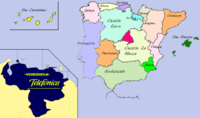

España en el 2020
 De: La Frikipedia, la enciclopedia extremadamente seria.
De: La Frikipedia, la enciclopedia extremadamente seria.
| De la serie Países del planeta tierra:
|
| Respública Uropea d'España
|
|
| Lema: European Botijus Vltra
|
Himno: "¡Voy, caminando por la vía!"
|

|
| Capital
|
Villarejo City
|
| Mayor ciudad
|
Oviedo
|
| Lenguas oficiales
|
Español con tacos, SMS
|
| Gobierno
|
Republica monarquica democratica republicana de España
|
| Presidentísimo
|
Li morito Juan gelepollas y Kira Miró
|
| Área
|
islas afortunadas, Baleares, Ceuta, Melilla, Venesueeeela'h, Portugal
|
| Población
|
115.116.894 habitantes
|
| Moneda
|
Ecus
|
| Zona horaria
|
GTM +1 (GMT en Canarias), Miami -3, La Habana (Venezuela) -4
|
| Dominio Internet
|
.es
|
| Código telefónico
|
0034€
|
| Tarde, mal y a rastras...
|
España, cuyo nombre oficial es República de España, es un país soberano miembro de los Estados Unidos de Europa (U.S.E.) y cuya fuente de gobierno es una democracia dictatorial fascistocomunista parlamentaria dirigida por el Rey y el príncipe de beckelar.
Datos Generales
- Su territorio, con capital en Villarejo City, ocupa la práctica totalidad de la península Ibérica junto con los archipiélagos de las Islas Baleares, las Islas Canarias, el Islote de Perejil, la ciudad autónoma de Ceuta y la región sudamericana Telefónica (antes conocida como Venesueeeeela'h).
- Tiene una extensión de 1.492.925 Km2, siendo el segundo país más grande del continente tras Rusia, y una población de 115.116.894 habitantes según datos del padrón municipal de 2019. España es, además, es el segundo país del mundo con territorios en tres continentes distintos (El otro es Shile, pero nadie se habría dado cuenta porque es una mierda de islita).
- De acuerdo a la Constitución Española, el castellano con tacos y el sms son las lenguas oficiales del Estado y son las lenguas comunes de todos los españoles. Las demás lenguas minoritarias han desaparecido y se consideran arcáicas, menos la lengua andaluza, que perdura en la respectiva comunidad en algunas zonas.
- La Constitución Española vigente define el país como un Estado aconfesional y su religión mayoritaria es el pastafarianismo, recientemente se han construido numerosas estatuas al dios espageti volador , aprovechando el bronce de las estatuas de Franco retiradas en el siglo XX.
Historia: Hechos importantes del Siglo XXI
- En 2011 se sella el tratado conocido como “Firma de Lisboa”, según el cual Portugal se integra oficialmente en España en forma de Comunidad Autónoma adoptando el sms como idioma oficial.
- Un año después, TETA, la organización terrorista más antigua del mundo, anuncia oficialmente su desintegración. Tras un periodo de verificación de dos años, el Estado Español constata la desarticulación de la banda, lo que posibilita el referéndum de independencia en el País Vasco. El sí gana con un 67% de los votos y el no obtiene un 66%. Tres años después, en 2013, y con Alberto Ruiz Gay-ardón como presidente del gobierno, el País Vasco obtiene su independencia de España en un acto solemne al que acuden las principales autoridades de España, teletubilandia, de la Unión Europea y de la recién constituida Euskal Herria Errepublika (República del País Vasco). Un año después,
TETA ATA reaparecería dentro del Estado Vasco exigiendo la reunificación con España. En la actualidad, sigue ejerciendo el terrorismo disparando gominolas a aquellos que piensan diferente.
- En 2013 se inaugura la nueva sede del Parlamento español, edificio firmado por el prestigioso arquitecto Santiago Calatrava. Durante el acto de inauguración el edificio se viene abajo causando graves destrozos en los cuerpos y cabezas de los parlamentarios. El caos en los días sucesivos es tal que, por iniciativa de un grupo de empresarios catalanes, se concentra un gobierno provisional en un edificio del antiguo Forum de Barcelona. Un año después se convoca un referéndum para que los ciudadanos decidan si desean que Asia y más que América, con mas de 100000 trillones de habitantes.
- En 2014 la empresa española Telefónica adquiere el 100% de Venesueeeela'h y se la cede al gobierno español para su gestión, siendo los beneficios compartidos por la empresa y el Estado. Venesueeeela'h se convierte así en una Comunidad Autónoma española. Es rebautizada como Telefónica y pasa a la Historia como la primera región patrocinada del mundo.
Foto de Madrid después de perder la capitalidad de España y otorgárcele a Barcelona. Foto perteneciente a la versión de
Hola de Korea después del bombardeo bioquímico Catalán a base de pautumaca y calçots
- En 2015 TETA reaparece pidiendo la unificación del País Vasco a España
- Tras la inesperada abdicación del Rey Felipe VI de Borbón el 13 de diciembre de 2015 (con su ya célebre frase: “Oyes, que lo dejo”), España se constituyó en una democracia dictatorial parlamentaria. Esto forzó una importante reforma constitucional que contó con la aprobación de todos los grupos parlamentarios con la excepción del representante de Izquierda Unida que, además, tuvo que ser desalojado por montar un espectáculo. Se decidió respetar la bandera bicolor y mantener el himno que, en 2008, compusiera el cantante y poeta Melendi (posteriormente reconocido con un Premio Nobel de la Paz por su defensa de los cultivadores de marihuana en todo el mundo).
- En 2016 la Unión Europea culmina su proceso de reformulación: se firma la versión definitiva de su Constitución (The Eurobook), se adopta el nombre de Estados Unidos de Europa (U.S.E.) y el socialista español José Blanco es elegido primer presidente europeo. Éste dimitiría sólo dos días después de su nombramiento por exceso de trabajo y sustituido por el francés Nicolás Sarkozy (que, en el plazo de un mes, inhabilitaría los euros como moneda oficial, implantaría los ecus, volvería a los euros, aprendería esperanto y publicaría dos novelas, una de espías y un drama rural con trasfondo político).
"Que ti sooooooma. El morito Juan, Presidente de España en el 2017
- En 2017 Una asamblea popular decide elegir nuevo presidente, poniendo de candidatos al Morito Juan y a Bartolo, personajes de Cruz y Raya. Sale elegido Bartolo por el 99,99999999999999999999999999989 de los votos, pero tras descubrir que violaba a la gente para que le votara, lo metieron en chirona, y fue elegido el Morito Juan, presidente de España.
- En la cumbre Españoamericana del año 2018, Chavez propone la independencia del estado de Telefónica, y la respuesta del presidente español fue: -Tu ere gelepolla'h no??? ¿Por qué no te callas otra vez, joderee?
Bartolo en chirona. ¿Qué te pasa ahora? ¿A quién vas a violar ahora cabrón?
La presidenta Kira Miró, preocupada por los altos precios de la leche
- En 2018, después que se descubriera el Morito Juan en los baños del Pachá de Barcelona junto con Tynky Pinky(Presidente del mundo mundial) haciendo “manitas”, éste es destituido y Kira Miró se convierte en la primera mujer en acceder a la presidencia de España. Miró iniciará entonces una serie de políticas llamadas a transformar por completo la morfología del país. Por una parte Castilla León sería rebautizada como Castilla Lince con la excusa de que hay que potenciar los animales patrios y no los africanos, lo que causa un grave incidente diplomático con África y con Castilla al mismo tiempo.
- Miró decidió tambien que castilla la mancha se llamaría castilla la limpia en un intento por hacer de España un país fashion, esta decisión fue rápidamente rechazada por los manchegos pues con el cacho tiempo que lleva la mancha ahi ahora no la quita ni el don limpio.
- Miró decide que Valencia ya tiene un montón de cosas “chulas” y ordena que se trasladen todos los naranjos a Soria. Los ciudadanos de Valencia, indignados, toman las calles del centro y se las llevan a la periferia, lo que causa gran desconcierto entre la gente, pero principalmente entre los carteros, los taxistas lo celebraron alegremente pues ahora seria mas fácil, todavía, tangar a los guiris.
- En los meses sucesivos, varias comunidades autónomas serían súbitamente cambiadas de ubicación, haciendo de España el primer país donde la esquizofrenia dejaría de ser una enfermedad para convertirse en un rasgo del carácter nacional.
- España gana el mundial de tiro de gapo en el 2020, y la vuelve a pifiar en la eurocopa 2020, siendo eliminados por Gorbacholandia.
- Las Islas Baleares se convierte el la mayor economia mundial pero sigue con España por mera lastima
Actualmente España es la cuarta potencia económica universal y está considerada por la ONU el mejor país del mundo para emborracharse y el cuarto mejor para morirse.
Enlaces Externos
Autor(es):
- Fordus
- Jowsh
- Guilfer
- Khazike Khashondo
- El Sevillano
- Nadaquever
- Jomoes4
- Cristian chachi 100
- Chilean heavy metal
- TC
Frikipedia 2005-2016, Licencia
GFDL 1.2 - Extraído por FrikiLeaks

 Imperios de Europa
Imperios de Europa